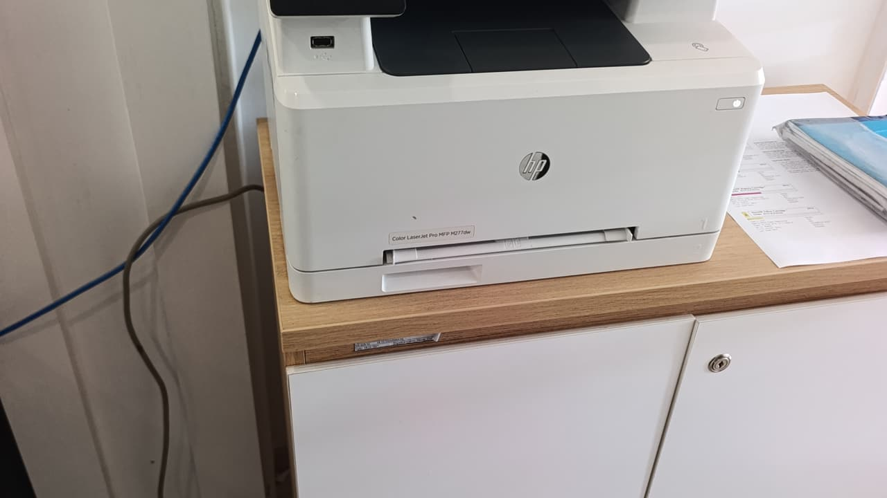

Nạp mực, bơm mực máy in Quận 7 tận nơi — cao ốc Phú Mỹ Hưng và KCX Tân Thuận
Kho vật tư đặt tại 5/19 Phạm Hùng. Kỹ thuật tới Quận 7 trong 30 – 50 phút — xem máy rồi báo giá, anh/chị đồng ý thì mới tháo.

Quận 7 là địa bàn đông nhu cầu nhất trong khu Nam, nhưng cũng khó vào nhất. Một nửa khách nằm trong cao ốc Phú Mỹ Hưng — nơi kỹ thuật phải đăng ký thẻ khách ở quầy lễ tân, có toà yêu cầu cư dân hoặc nhân viên xuống dẫn lên. Nửa còn lại nằm trong Khu chế xuất Tân Thuận, cổng kiểm soát riêng, phải khai báo trước.
Vì vậy khi anh/chị gọi, chúng tôi hỏi thêm hai câu: tên toà nhà hoặc công ty, và toà đó yêu cầu thủ tục gì. Biết trước thì kỹ thuật chuẩn bị giấy tờ, mặc đồng phục, lên đúng lần đầu — thay vì mất thêm nửa tiếng ở sảnh.
Thông tin nhanh — Quận 7
| Thời gian tới | 30 – 50 phút |
| Nạp mực laser A4 | từ 80.000đ |
| Máy A3 / photocopy | từ 250.000đ |
| Phun mực hệ bình | từ 150.000đ |
| Giờ làm việc | 08:00 – 19:00 |
| Hoá đơn VAT | Có |
Nạp mực, thay mực, bơm mực — khách Quận 7 hỏi khác nhau theo nhóm
Khối văn phòng Phú Mỹ Hưng thường gọi là "thay mực máy in", vì với họ việc này nằm trong mục chi phí vận hành — hỏi là hỏi giá và thời gian, ít quan tâm thao tác. Nhóm này cần phiếu bảo hành và báo giá bằng văn bản để kẹp vào hồ sơ chi.
Hộ gia đình và shop ở Tân Quy, Tân Phong hay gọi "nạp mực" hoặc "bơm mực" — quan tâm giá và việc có cần mang máy đi hay không.
Nhà máy trong KCX Tân Thuận thì gọi theo mã hộp mực luôn, ví dụ "còn CF280A không". Nhóm này in khối lượng lớn, nên chúng tôi tư vấn hộp dung tích cao thay vì nạp dày.
Cả bốn cách gọi đều cùng một dịch vụ, cùng một giá. Khác nhau chỉ là hồ sơ kèm theo.
Khu vực Quận 7 nhận tận nơi
Phú Mỹ Hưng — Cảnh Viên, Hưng Vượng, Mỹ Khánh, Sky Garden, Riverside
Khu chế xuất Tân Thuận (khai báo cổng trước)
Tân Thuận Đông, Tân Thuận Tây, Bình Thuận
Tân Quy, Tân Phong, Tân Kiểng, Tân Hưng
Phú Thuận, Phú Mỹ — tuyến Huỳnh Tấn Phát
Him Lam, Nguyễn Thị Thập, Nguyễn Văn Linh
Vào cao ốc và khu chế xuất: chuẩn bị trước cho nhanh
Cao ốc Phú Mỹ Hưng
Phần lớn toà yêu cầu đăng ký thẻ khách và có người xác nhận. Anh/chị cho biết tên toà và số căn/phòng, chúng tôi gọi lễ tân trước. Kỹ thuật mang theo tấm lót để không làm bẩn sàn — hộp mực mở ra là có bụi mực.
Khu chế xuất Tân Thuận
Cần khai báo người và phương tiện trước, nên ca trong KCX chúng tôi hẹn theo khung giờ chứ không nhận gấp trong 30 phút. Bù lại, nhà máy thường có nhiều máy một lúc — đi một chuyến làm gộp, chi phí trên mỗi máy giảm.
Shop và hộ gia đình Tân Quy, Tân Phong
Đi lại thuận, tới nhanh nhất trong Quận 7. Máy ở nhóm này thường là HP 107a, Canon LBP2900, Brother L2321d — vật tư chúng tôi luôn có sẵn trên xe.
Bảng giá đầy đủ theo mã hộp mực
Giá như nhau cho cả bảy khu — chỉ thời gian tới là khác.
Máy hỏng chứ không chỉ hết mực?
Xem bảng triệu chứng – nguyên nhân để biết việc nào xử lý được ngay tại chỗ.
Câu hỏi thường gặp — khách Quận 7
Kỹ thuật vào được cao ốc Phú Mỹ Hưng không?
Được. Chúng tôi làm quen thủ tục thẻ khách của các toà trong Phú Mỹ Hưng. Anh/chị cho biết tên toà và số căn, nếu toà yêu cầu cư dân xác nhận thì nhắn trước giúp chúng tôi — kỹ thuật sẽ lên đúng lần đầu.
Nạp mực máy in Quận 7 mất bao lâu kỹ thuật tới?
Khoảng 40–60 phút, vì kho đặt ở Quận 8 và phải qua cầu. Nếu anh/chị ở Tân Quy, Tân Phong thì thường nhanh hơn; vào KCX Tân Thuận thì hẹn theo khung giờ do phải khai báo cổng.
Công ty trong KCX cần giấy tờ để thanh toán thì sao?
Chúng tôi gửi báo giá bằng văn bản trước khi làm, và sau khi làm có phiếu bảo hành ghi rõ dòng máy cùng số trang — đủ để bộ phận kế toán đối chiếu. Anh/chị cần thêm giấy tờ gì thì nói trước để chúng tôi chuẩn bị.
Công ty có nhiều máy, làm một lần được không?
Được và nên làm vậy. Đi một chuyến xử lý nhiều máy thì tiết kiệm cho cả hai bên. Anh/chị gửi danh sách dòng máy trước, chúng tôi mang đủ mực và vật tư cho từng loại.
Khu vực lân cận
Đặt nạp mực tận nơi Quận 7
Kỹ thuật tới trong 30 – 50 phút. Xem máy rồi báo giá, anh/chị đồng ý mới tháo.